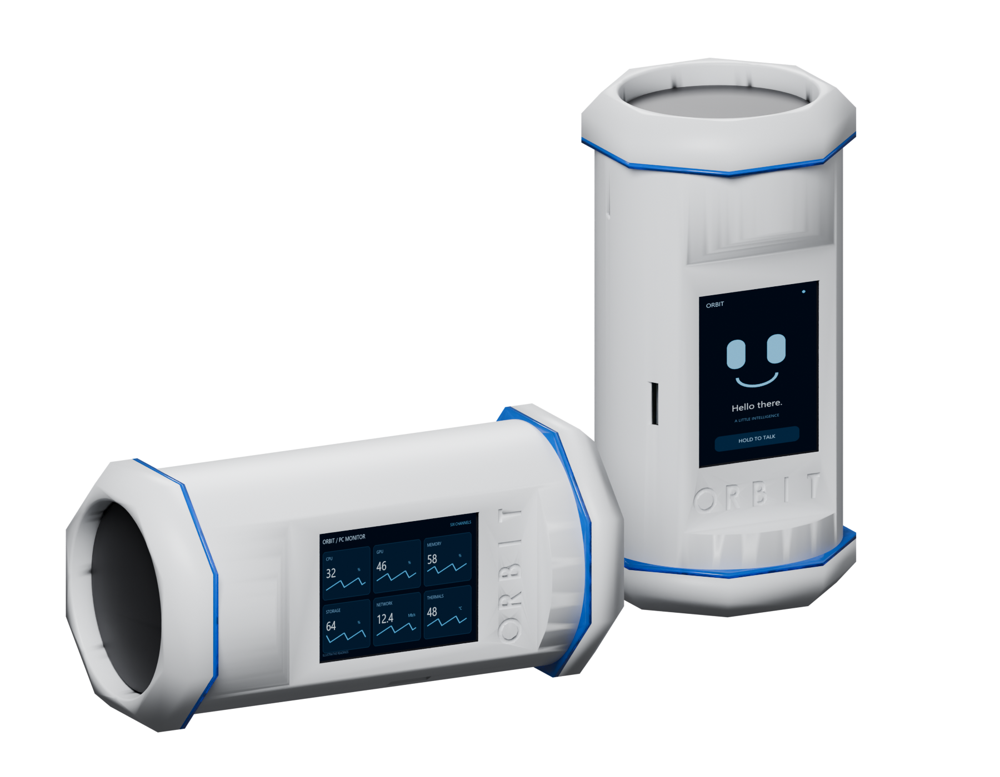
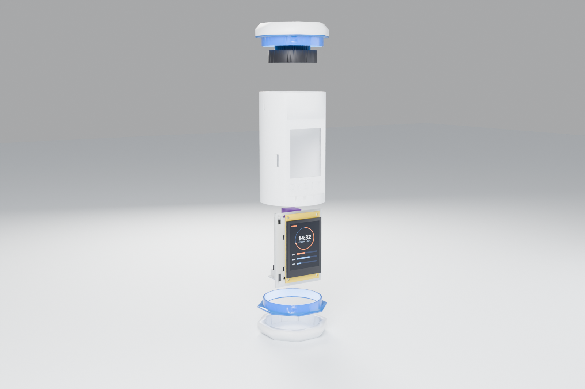

Hold. Speak. Hear the reply.
Microphone audio travels over Wi-Fi to the paired PC, then to OpenAI Realtime. Reply audio plays through Orbit. The language model runs through the provider, not on the ESP32.
ESP32 hardware + Windows companion
Connect to OpenAI, Claude, DeepSeek and Cursor from one device. Select an AI provider, ask questions or use the separate voice and coding integrations. PC telemetry, app shortcuts and local privacy controls are built in.
Tabletop prototype shown. A smaller, portable version is in development.

Switch the AI desk between supported providers. Talk through the speaker or follow a coding task through the separate voice and Codex connections.
| Connection | What it does | Interface / account |
|---|---|---|
| OpenAI | Text questions and model selection in AI desk | Responses API · your API key |
| Claude / Anthropic | Text questions and model selection in AI desk | Messages API · your API key |
| DeepSeek | Text questions and model selection in AI desk | Chat API · your API key |
| Cursor | Questions through the installed agent | Cursor CLI · read-only Ask mode |
| OpenAI Realtime | Hold-to-talk voice; audio replies through Orbit’s speaker | PC-hosted relay · your OpenAI API account |
| Codex | Paired conversation, task state, approval requests and reviewed voice commands | Local integration with the paired PC conversation |
Microphone audio travels over Wi-Fi to the paired PC, then to OpenAI Realtime. Reply audio plays through Orbit. The language model runs through the provider, not on the ESP32.
View the paired conversation, task state and pending approval requests. Dictated commands are transcribed for review; choose Send or Cancel before they reach the coding conversation.
Select a model exposed by your API key. Cursor uses its installed CLI in Ask mode. AI desk messages and Yes/No replies do not grant permissions in other applications.
The AI desk uses one selected provider per request. Connectors are implemented in the current development source, and additional integrations can be developed. Model access depends on your account. API usage is billed by the provider; a chat subscription is not an API key. Your PC must be awake.
The ENGINE view lists configured connections. ChatGPT uses OpenAI Realtime voice. Claude, DeepSeek and Cursor return text, with OpenAI speech services handling speech input/output. Codex is a paired coding conversation with reviewed SEND / CANCEL commands. Provider credentials and API billing are separate requirements.
Configure cleanup targets on your PC, then trigger the workflow from Orbit or the console.
Deletion scope: local files and selected browser data. Sync, backups and cloud copies are outside this cleanup. It deletes files; it does not promise forensic erasure on SSDs.
Live PC data, Sentry, shortcuts, Hue rooms, music-reactive lighting and visualizations. The captures below show the device UI from the current development build.
CPU and GPU load, RAM usage, VRAM, temperature, disk activity and capacity, network transfer rates and available power/fan readings. PC data is sampled by the host loop approximately once a second.
Show several readings on one screen or switch to dedicated CPU, GPU, memory, storage, network and thermal pages. NVIDIA telemetry uses nvidia-smi; AMD/Intel GPU data uses Windows WDDM interfaces.
Launch selected programs with arguments, run configured commands or scripts, or trigger a session action. The launcher uses the shortcuts you explicitly save in the console.
Previous, play/pause, next, stop, mute and Windows master volume. Bluetooth A2DP speaker mode has been tested with phone audio and currently runs as a separate firmware program.
Snapshots, preview, local recording, motion-triggered clips and an optional alarm. Orbit receives 160 × 90 camera frames over the local network. Camera images are not sent to an AI provider by Sentry.
Theme palettes, brightness, screen rotation, clocks, focus timer and stopwatch. Two addressable LED rings with 12 effects, colour selection, brightness and speed settings.
Control connected Philips Hue rooms and lights from Orbit. Adjust brightness, switch rooms on or off, and use ALL ON / ALL OFF. Requires a compatible Hue bridge paired through the PC companion.
Music Link follows the beat and audio levels received from the visualizer. Party, Candle, Aurora, Sunset, Night, Reading and Relax modes can target selected rooms. STOP MODE restores remembered settings.
Four visualizer views: spectrum bars, a retro horizon, a radial display and a starfield. These are the fun extras alongside the PC and AI tools.
Provider setup, display preferences, app shortcuts and camera controls. Browse the current console screens below. Open any screenshot for a larger view or its original resolution.
Actual v0.5.0 development console, captured with empty settings and no connected hardware. The offline state is retained; no API keys, private chats or camera images are shown.

| Controller | ESP32-based CYD display board |
|---|---|
| Display | 320 × 240 colour TFT · XPT2046 resistive touch · portrait or landscape use |
| Network | 2.4 GHz Wi-Fi · paired PC device link · confirmation on the device |
| Microphone | INMP441 digital I²S microphone |
| Audio output | MAX98357A I²S amplifier · Dayton Audio PC68-4 2.5-inch, 4-ohm driver |
| Bluetooth | A2DP speaker mode · separate firmware program in the current prototype |
| Lighting | Two four-LED WS2812 rings · 12 effects · colour, brightness and speed controls |
| Power | Prototype: two parallel 18650 cells and a power board · runtime not yet specified |
| Host software | Windows · Node.js companion console · local settings and Windows-protected API keys |
| Firmware updates | Wireless updates on compatible firmware · USB/serial setup and recovery tools |
| Enclosure | 3D-printed Capsule prototype · white shell, translucent blue rings · STL and 3MF files |
Pairing & firmware tools
From the creator
Orbit is a working prototype, and it is fun to use. We intend to optimize it, make it smaller, develop a dedicated circuit board to simplify assembly, and offer an assembled version for sale. The smaller hardware and custom board are still in development; there is no finished production version available yet.
Seth Fandetti
Creator of Orbit
I invented Orbit to solve a problem I kept running into. I was working with multiple AI models on my PC, but I didn’t want to stay at my desk the whole time. I could use my phone around the house, but unlocking it and switching between apps got old pretty quickly.
I wanted a dedicated device I could leave on the kitchen counter or on a table nearby: something that let me monitor what was happening on my PC and see when work needed my attention. Getting live approval requests was a big part of the original idea.
We kept adding useful and fun features: the face, LED effects, privacy tools, and now Philips Hue room controls, music-reactive lighting and visualizations. There is more to try as the project develops.
This first version is a tabletop prototype. A smaller, portable version is in development, and we’ll release it when we reach the point where we can produce it properly. In the meantime, I want people to play with the software, add their own ideas and help turn this into something useful.
We want people to experiment with the software, add integrations, change the interface and build their own versions. The public source covers the companion, firmware and original Capsule hardware resources.
The device shown here is the first tabletop prototype. A smaller, portable version is in development and is the intended basis for the version we sell. We’ll release it when the design is ready to produce. The aim is an assembled device that saves you the printing, sourcing, wiring and setup work.
The software repository, contribution guide, source downloads and build resources are public. The first installer, matched prebuilt firmware and production hardware are not available yet.
Source & development resources ↗